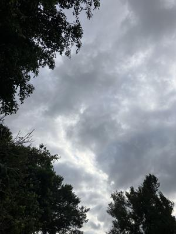
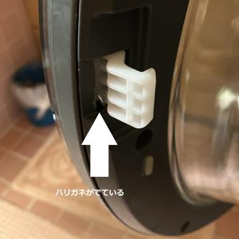

うるがいの話 ある日
最新: 洗濯機のドアが開かない【うるがいの話 ある日】とは 一日だけのプログです
『うるがいの話』の最新一日だけのプログで、通信料が少なく経済的だ。カニの画像をクリックすると全ての日付が載る『うるがいの話』サイトを表示します
|
|
【うるがいの話】 うるがい(ｳﾙｶﾞｲ urugai)とは、『もずくがに』の名前でとても大きくなります。 |
|---|---|
|
|
【カミマヤーの話】 猫のことを方言でマヤーといいます。カミマヤー（kamimayaa）とは、神の猫のことです。 |
|
【たながぁの音楽】 たながぁ（ﾀﾅｶﾞｰ tanagaa）とは手長えびのことで、何種類かあり大きいのは車 エビぐらいになります。 |

|
【ぶながぁの話】 ぶながぁ(ﾌﾞﾅｶﾞｰ bunagaa)とは、赤い髪の毛、赤い身体、そして身長は１ｍ２０ｃｍ ぐらい、川の蟹を食べているの目撃された。場所は沖縄県国頭郡大宜味村のと ある村僕の隣近所に住んでいる爺さんから、聞いた話です。 |
|
|
【ギーマの話】 ギーマ(giima)とは、山原の里山に咲くスズランに似た、 花を付けます。実は食べられます、 気が付くと口の周りが紫になっています。 |
2025年01月08日 (水）洗濯機のドアが開かない
15:57

ＢＤ－Ｓ８６００Ｌ洗濯機日立 ドアハンドル 針金みたいな金属が出て
ドアが開かない

日立から派遣された修理工が、新しいドアを備え付ける。『あれ！、Lです
ね』、あ！、右ドアだからＲと思ったので型番を訂正してもらいました。
ＢＤ－Ｓ８６００Ｌだと、本土から取り寄せないといけないですね・・・・
『でも、ドアハンドル、直せるかも』と１５分ほどかかったものの無事直し
た。フムフム、やはり前回（ ２０２３年９月１５日 ）の修理に問題が（部
品は前回で新品になったので、ただ再設置だけ）。
いやいや、不幸中の幸い、もし型番が正しいかったら３万６千円ほどの料金
今回は、１５，０７０円なり。ところで、この洗濯機２０１４年の購入で５
年の保証はとうに切れ、部品も２０２０年までのこと。
ところで、前回と前回はエディオンの修理工で、今回はメーカーの日立なの
は、どうしてなんですか？と言うと、エディオンで難易度で切り分けている
のではと答えてくれた。ドアハンドルは、軽快に開けることができる！！。
マ、あたりまえでしょうが。お礼にミカン２個をお土産に渡す。